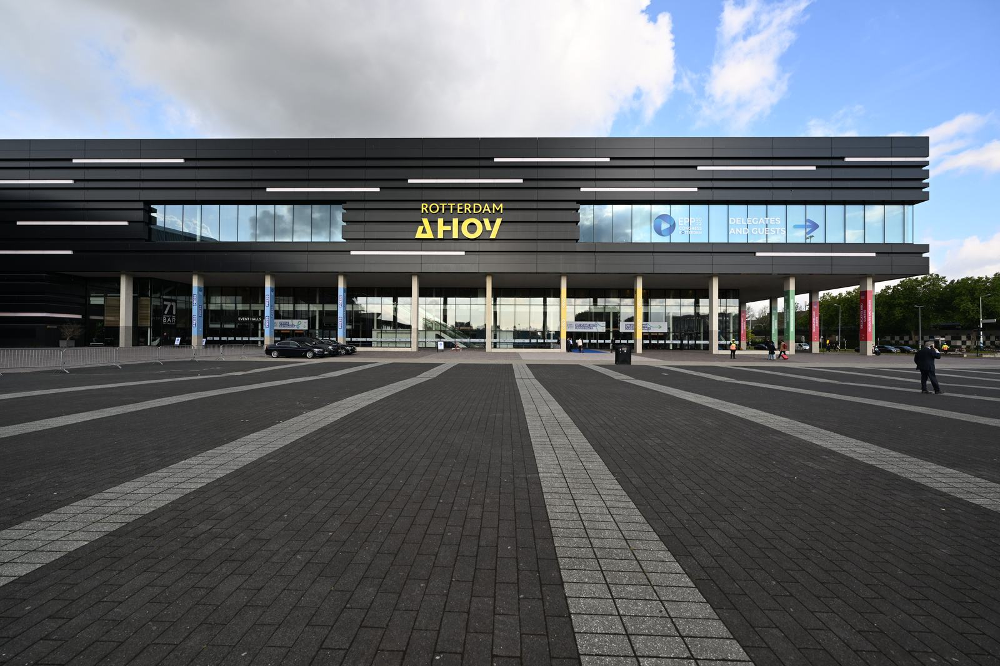
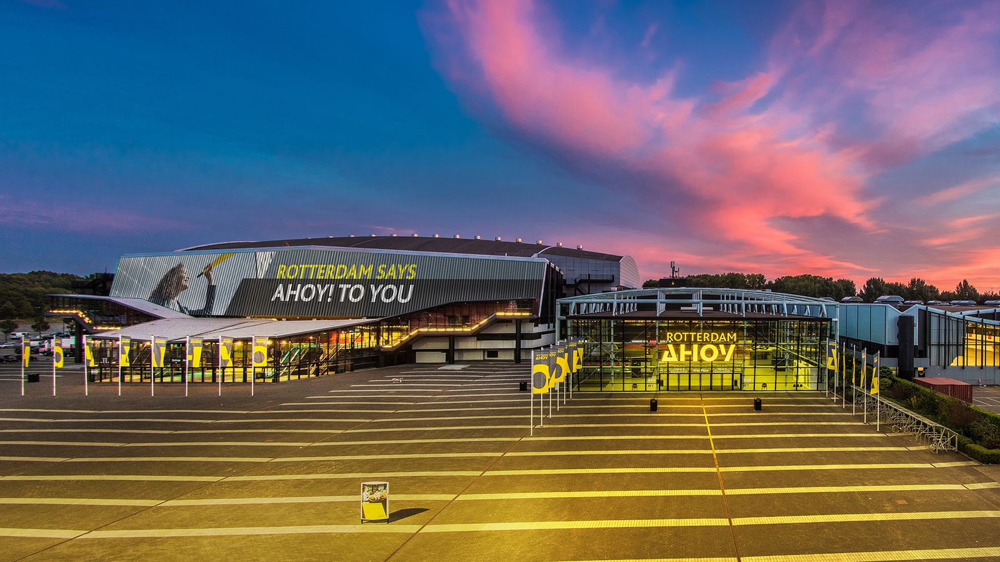

Venue · Convention centre
Rotterdam Ahoy
- Type
- Convention centre
- Location
- Rotterdam, Netherlands
- Address
- Ahoyweg 10, 3084 BA Rotterdam
- Capacity
- 4,400 capacity
- Exhibition space
- 33,000 m²
- Halls
- 6 exhibition halls (official halls total 33,000 m², of which Hall 1 is 10,000 m²) plus Rotterdam Ahoy Convention Centre (RACC)
- Official website
- https://www.ahoy.nl/
About
Rotterdam's combined exhibition halls and convention centre on Ahoyweg. Official hall pages put the six exhibition halls at 33,000 m², including Hall 1 at 10,000 m². The official RACC capacity chart dated 23 March 2026 is the source for convention-room figures: RTM Stage is 3,100 m² with theatre seating for 4,400; the combined Rotterdam room is 2,500 m² / 2,300 theatre; Port 1 is 1,050 m² / 1,000 theatre. The June 2026 venue-guide floorplan also states 90,000 m² of space for events, tradeshows and conferences as a wider campus figure, which is not stored as indoor exhibition area. The capacity chart publishes.
Spaces
| Name | Type | Capacity | Area |
|---|---|---|---|
| Exhibition Hall 1 | — | — | 10,000 m² |
| RTM Stage | — | 4,400 | 3,100 m² |
| Rotterdam (combined) | — | 2,500 | 2,500 m² |
| Port 1 | — | 1,000 | 1,050 m² |
| Dock 10 | — | 520 | 562 m² |
| Dock 1 | — | 450 | 450 m² |
Official documents
- Rotterdam Ahoy Convention Centre capacity overview (23 March 2026) Capacity chart
- Rotterdam Ahoy RACC venue guide (June 2026) Brochure
Upcoming events
Sources
- Official source — https://www.ahoy.nl/
- Official source — https://www.ahoy.nl/files/files/documenten/rotterdam_ahoy_racc-capacity-overview-2026-03.pdf
- Official source — https://portal.ahoy.nl/files/files/venueguides/rotterdam_ahoy_venue-guide-en-racc-a4-june.pdf